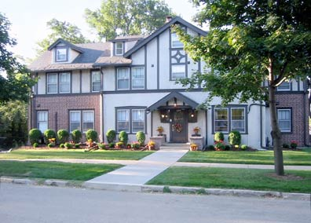

|
|
|
|  |
|
| A licensed, 30-bed treatment facility offering primary, extended and half-way house for chemically dependent women. |
|
The Gables Treatment Center
Serving chemically dependent women since 1983
The Gables is located near downtown Rochester in Southeast Minnesota. A residential treatment facility dedicated to women 18 years of age and above, supporting their journey through recovery from chemical dependency/addiction. The Gables offers comprehensive and specialized treatment programs in a caring and nurturing environment. Our goal is to nurture and treat the whole woman: body, mind and spirit.
- High Intensity (Primary Treatment)
- Medium Intensity (Extended Care Treatment)
- Low Intensity (Halfway House)
The mission of the Gables is to serve women with addictions in a respectful and dignified manner in the setting of a home environment that provides safety, recovery counseling, and medical/health and nutritional care. The method of the recovery counseling is based on the twelve step program.
Our highly qualified treatment team develops a comprehensive individualized treatment plan focusing on issues specific to women:
We are dedicated to women and their pursuit of recovery. We give support and assistance every step of the way.
|
|
|
|
A Message from the Founder
When I was in treatment, I thought I held all of the keys to a full recovery. The day I left, I realized I had just begun to grow and knew little of the healing potential within the recovery process. Every issue caused me turmoil, and old resentments, frustration, and self-pity threatened my recovery. I spent many anguished days searching for help.
With my own struggle in mind, my heart was led to create the Gables, a secure environment in which to experience this awesome new process of growth. If you feel a need for more guided help in attaining hope and truly living a life of recovery, my staff and I would welcome you at the Gables.
We're here to help.
June D.
Contact The Gables
The Gables
604 5th Street SW
Rochester, MN 55902
507-282-2500 (locally)
800-GABLES-0
800-422-5370
Email Us
|
|

 800-422-5370
800-422-5370